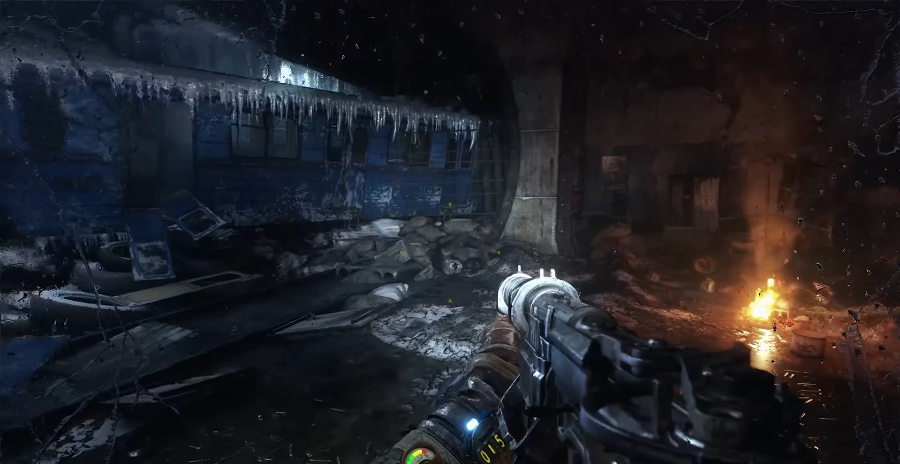

Aleksei decide investigar los ruidos extraños que escuchó. Se acerca con cautela a la fuente del sonido, manteniendo su linterna encendida para iluminar el camino. Al llegar, descubre que los ruidos provienen de una criatura mutante conocida como nosalis, se encuentra escondida entre los escombros. Aleksei se da cuenta de que no solo es una criatura, por lo que se toma su tiempo para reunir suficientes balas para enfrentarse a cada uno de ellos. Con su escopeta en mano, se prepara para el enfrentamiento. Cada bala cuenta, por lo que fallar podría significar nunca volver a su hogar. A medida que dispara, logra eliminar a varios nosalis, pero siguen llegando más y más, por lo que luego de una larga batalla, este termina por salir victorioso, pero el largo combate lo dejó extremadamente agotado y mal herido. Por lo que pocos pasos después, termina por caer al suelo.
Luego de unas horas, un grupo de personas lo encuentra, y se lo llevan a un lugar seguro, donde sus heridas son tratadas, no obstante, no se logra recuperar completamente todas sus heridas, por lo que termina por quedarse en ese lugar. A pesar de todo lo que vivió, Aleksei se siente aliviado de haber sobrevivido a esa experiencia, aunque sabe que no podrá regresar a su hogar, al menos tiene un lugar seguro donde vivir. Sin embargo, no puede evitar sentir una gran tristeza por todas las personas que desaparecieron en los túneles del metro, incluyendo a sus amigos y familiares. Aunque logró llegar a Polis, no pudo encontrar las respuestas que buscaba, pero al menos logró sobrevivir y encontrar un nuevo hogar.